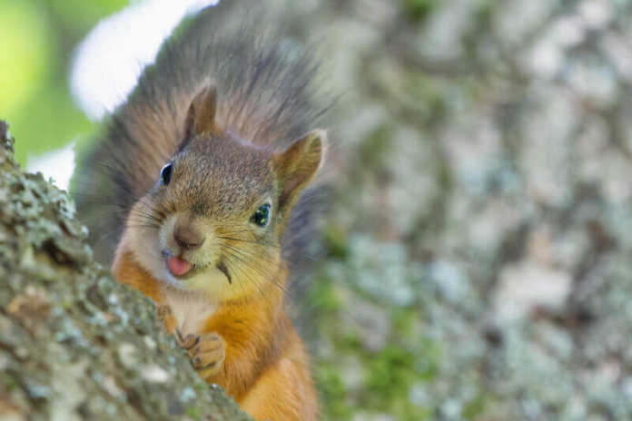

Squirrels are members of the family Sciuridae, a family that includes small or medium-size rodents. The squirrel family includes tree squirrels, ground squirrels, chipmunks, marmots (including woodchucks), flying squirrels, and prairie dogs amongst other rodents. Squirrels are indigenous to the Americas, Eurasia, and Africa, and were introduced by humans to Australia.[1] The earliest known squirrels date from the Eocene period and are most closely related to the mountain beaver and to the dormouse among other living rodent families.
